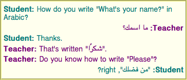

- Semantics
- Elements in the DOM
- HTML element constructors
- Element definitions
- Content models
- Global attributes
- The
innerTextandouterTextproperties - Requirements relating to the bidirectional algorithm
- Requirements related to ARIA and to platform accessibility APIs
Semantics, structure, and APIs of HTML documents
Documents
Every XML and HTML document in an HTML UA is represented by a Document object.
[DOM]
The Document object's URL is defined in
DOM. It is initially set when the Document object is created, but can
change during the lifetime of the Document object; for example, it changes when the
user navigates to a fragment
on the page and when the pushState() method is called
with a new URL. [DOM]
Interactive user agents typically expose the Document object's
URL in their user interface. This is the primary
mechanism by which a user can tell if a site is attempting to impersonate another.
The Document object's origin is defined in
DOM. It is initially set when the Document object is created, and can
change during the lifetime of the Document only upon setting document.domain. A Document's origin can differ from the origin of its URL;
for example when a child navigable is created, its active document's origin is inherited from its parent's active document's origin, even though its active document's URL is
about:blank. [DOM]
When a Document is created by a script using
the createDocument() or createHTMLDocument() methods, the
Document is ready for post-load tasks immediately.
The document's referrer is a string (representing a URL) that
can be set when the Document is created. If it is not explicitly set, then its value
is the empty string.
The Document object
DOM defines a Document interface, which
this specification extends significantly.
enum DocumentReadyState { "loading", "interactive", "complete" };
enum DocumentVisibilityState { "visible", "hidden" };
typedef (HTMLScriptElement or SVGScriptElement) HTMLOrSVGScriptElement;
[LegacyOverrideBuiltIns]
partial interface Document {
static Document parseHTMLUnsafe((TrustedHTML or DOMString) html);
// resource metadata management
[PutForwards=href, LegacyUnforgeable] readonly attribute Location? location;
attribute USVString domain;
readonly attribute USVString referrer;
attribute USVString cookie;
readonly attribute DOMString lastModified;
readonly attribute DocumentReadyState readyState;
// DOM tree accessors
getter object (DOMString name);
[CEReactions] attribute DOMString title;
[CEReactions] attribute DOMString dir;
[CEReactions] attribute HTMLElement? body;
readonly attribute HTMLHeadElement? head;
[SameObject] readonly attribute HTMLCollection images;
[SameObject] readonly attribute HTMLCollection embeds;
[SameObject] readonly attribute HTMLCollection plugins;
[SameObject] readonly attribute HTMLCollection links;
[SameObject] readonly attribute HTMLCollection forms;
[SameObject] readonly attribute HTMLCollection scripts;
NodeList getElementsByName(DOMString elementName);
readonly attribute HTMLOrSVGScriptElement? currentScript; // classic scripts in a document tree only
// dynamic markup insertion
[CEReactions] Document open(optional DOMString unused1, optional DOMString unused2); // both arguments are ignored
WindowProxy? open(USVString url, DOMString name, DOMString features);
[CEReactions] undefined close();
[CEReactions] undefined write((TrustedHTML or DOMString)... text);
[CEReactions] undefined writeln((TrustedHTML or DOMString)... text);
// user interaction
readonly attribute WindowProxy? defaultView;
boolean hasFocus();
[CEReactions] attribute DOMString designMode;
[CEReactions] boolean execCommand(DOMString commandId, optional boolean showUI = false, optional DOMString value = "");
boolean queryCommandEnabled(DOMString commandId);
boolean queryCommandIndeterm(DOMString commandId);
boolean queryCommandState(DOMString commandId);
boolean queryCommandSupported(DOMString commandId);
DOMString queryCommandValue(DOMString commandId);
readonly attribute boolean hidden;
readonly attribute DocumentVisibilityState visibilityState;
// special event handler IDL attributes that only apply to Document objects
[LegacyLenientThis] attribute EventHandler onreadystatechange;
attribute EventHandler onvisibilitychange;
// also has obsolete members
};
Document includes GlobalEventHandlers;Each Document has a policy container (a policy container), initially a new policy
container, which contains policies which apply to the Document.
Each Document has a permissions policy, which
is a permissions policy, which is initially
empty.
Each Document has a module map,
which is a module map, initially empty.
Each Document has an opener policy,
which is an opener policy, initially a new opener policy.
Each Document has an is initial about:blank, which is a
boolean, initially false.
Each Document has a during-loading
navigation ID for WebDriver BiDi, which is a navigation ID or null, initially
null.
As the name indicates, this is used for interfacing with the WebDriver
BiDi specification, which needs to be informed about certain occurrences during the early
parts of the Document's lifecycle, in a way that ties them to the original
navigation ID used when the navigation that created this Document was
the ongoing navigation. This eventually gets set back to null, after WebDriver
BiDi considers the loading process to be finished. [BIDI]
Each Document has an about base
URL, which is a URL or null, initially null.
This is only populated for "about:"-schemed
Documents.
Each Document has a bfcache blocking details, which is a
set of not restored reason details,
initially empty.
Each Document has an open dialogs list, which is a list of
dialog elements, initially empty.
The DocumentOrShadowRoot interface
DOM defines the DocumentOrShadowRoot mixin, which this specification
extends.
partial interface mixin DocumentOrShadowRoot {
readonly attribute Element? activeElement;
};Resource metadata management
document.referrer-
Returns the URL of the
Documentfrom which the user navigated to this one, unless it was blocked or there was no such document, in which case it returns the empty string.The
noreferrerlink type can be used to block the referrer.
The referrer
attribute must return the document's referrer.
document.cookie [ = value ]-
Returns the HTTP cookies that apply to the
Document. If there are no cookies or cookies can't be applied to this resource, the empty string will be returned.Can be set, to add a new cookie to the element's set of HTTP cookies.
If the contents are sandboxed into an opaque origin (e.g., in an
iframewith thesandboxattribute), a "SecurityError"DOMExceptionwill be thrown on getting and setting.
The cookie
attribute represents the cookies of the resource identified by the document's URL.
Using the synchronous document.cookie
API can be a source of performance issues. The Cookie Store API can be used instead,
as it provides an asynchronous way to handle cookies to avoid performance issues. See the Cookie Store API introduction for more
information. [COOKIESTORE]
A Document object that falls into one of the following conditions is a
cookie-averse Document object:
- A
Documentobject whose browsing context is null. - A
Documentwhose URL's scheme is not an HTTP(S) scheme.
 On getting, if the document is a cookie-averse
On getting, if the document is a cookie-averse Document object, then the
user agent must return the empty string. Otherwise, if the Document's origin is an opaque
origin, the user agent must throw a "SecurityError"
DOMException. Otherwise, the user agent must return the cookie-string
for the document's URL for a "non-HTTP" API, decoded
using UTF-8 decode without BOM. [COOKIES]
On setting, if the document is a cookie-averse Document object, then
the user agent must do nothing. Otherwise, if the Document's origin is an opaque
origin, the user agent must throw a "SecurityError"
DOMException. Otherwise, the user agent must act as it would when receiving a set-cookie-string for the document's
URL via a "non-HTTP" API, consisting of the new value
encoded as UTF-8. [COOKIES] [ENCODING]
Since the cookie attribute is accessible
across frames, the path restrictions on cookies are only a tool to help manage which cookies are
sent to which parts of the site, and are not in any way a security feature.
The cookie attribute's getter and
setter synchronously access shared state. Since there is no locking mechanism, other browsing
contexts in a multiprocess user agent can modify cookies while scripts are running. A site could,
for instance, try to read a cookie, increment its value, then write it back out, using the new
value of the cookie as a unique identifier for the session; if the site does this twice in two
different browser windows at the same time, it might end up using the same "unique" identifier for
both sessions, with potentially disastrous effects.
document.lastModified-
Returns the date of the last modification to the document, as reported by the server, in the form "
MM/DD/YYYY hh:mm:ss", in the user's local time zone.If the last modification date is not known, the current time is returned instead.
The lastModified attribute, on getting, must return
the date and time of the Document's source file's last modification, in the user's
local time zone, in the following format:
The month component of the date.
A U+002F SOLIDUS character (/).
The day component of the date.
A U+002F SOLIDUS character (/).
The year component of the date.
A U+0020 SPACE character.
The hours component of the time.
A U+003A COLON character (:).
The minutes component of the time.
A U+003A COLON character (:).
The seconds component of the time.
All the numeric components above, other than the year, must be given as two ASCII digits representing the number in base ten, zero-padded if necessary. The year must be given as the shortest possible string of four or more ASCII digits representing the number in base ten, zero-padded if necessary.
The Document's source file's last modification date and time must be derived from
relevant features of the networking protocols used, e.g. from the value of the HTTP `Last-Modified` header of the document, or from metadata in the
file system for local files. If the last modification date and time are not known, the attribute
must return the current date and time in the above format.
Reporting document loading status
document.readyState-
Returns "
loading" while theDocumentis loading, "interactive" once it is finished parsing but still loading subresources, and "complete" once it has loaded.The
readystatechangeevent fires on theDocumentobject when this value changes.The
DOMContentLoadedevent fires after the transition to "interactive" but before the transition to "complete", at the point where all subresources apart fromasyncscriptelements have loaded.
Each Document has a current document readiness, a string, initially
"complete".
For Document objects created via the create and initialize a Document object
algorithm, this will be immediately reset to "loading" before any script
can observe the value of document.readyState. This
default applies to other cases such as initial
about:blank Documents or Documents without a
browsing context.
The readyState getter steps are to return
this's current document readiness.
To update the current document readiness for Document
document to readinessValue:
If document's current document readiness equals readinessValue, then return.
Set document's current document readiness to readinessValue.
-
If document is associated with an HTML parser, then:
Let now be the current high resolution time given document's relevant global object.
If readinessValue is "
complete", and document's load timing info's DOM complete time is 0, then set document's load timing info's DOM complete time to now.Otherwise, if readinessValue is "
interactive", and document's load timing info's DOM interactive time is 0, then set document's load timing info's DOM interactive time to now.
Fire an event named
readystatechangeat document.
A Document is said to have an active parser if it is associated with an
HTML parser or an XML parser that has not yet been stopped or aborted.
A Document has a document load timing info load timing info.
A Document has a document unload timing info previous document unload timing.
A Document has a boolean was created via cross-origin redirects,
initially false.
The document load timing info struct has the following items:
- navigation start time (default 0)
- A number
- DOM interactive time (default 0)
- DOM content loaded event start time (default 0)
- DOM content loaded event end time (default 0)
- DOM complete time (default 0)
- load event start time (default 0)
- load event end time (default 0)
- DOM content loaded event start time (default 0)
DOMHighResTimeStampvalues
The document unload timing info struct has the following items:
- unload event start time (default 0)
- unload event end time (default 0)
DOMHighResTimeStampvalues
Render-blocking mechanism
Each Document has a render-blocking element set, a set of
elements, initially the empty set.
A Document document allows adding render-blocking elements
if document's content type is
"text/html" and the body element of document is null.
A Document document is render-blocked if both of the
following are true:
document's render-blocking element set is non-empty, or document allows adding render-blocking elements.
The current high resolution time given document's relevant global object has not exceeded an implementation-defined timeout value.
An element el is render-blocking if el's node document document is render-blocked, and el is in document's render-blocking element set.
To block rendering on an element el:
Let document be el's node document.
If document allows adding render-blocking elements, then append el to document's render-blocking element set.
To unblock rendering on an element el:
Let document be el's node document.
Remove el from document's render-blocking element set.
Whenever a render-blocking element el becomes browsing-context disconnected, or el's blocking attribute's value is changed so that el is no longer potentially render-blocking, then unblock rendering on el.
DOM tree accessors
The html element of a document is its document element,
if it's an html element, and null otherwise.
document.headReturns the
headelement.
The head element of a document is the first head element
that is a child of the html element, if there is one, or null
otherwise.
The head attribute,
on getting, must return the head element of the document (a
head element or null).
document.title [ = value ]-
Returns the document's title, as given by the
titleelement for HTML and as given by the SVGtitleelement for SVG.Can be set, to update the document's title. If there is no appropriate element to update, the new value is ignored.
The title element of a document is the first title element
in the document (in tree order), if there is one, or null otherwise.
The title attribute must, on getting, run the following
algorithm:
If the document element is an SVG
svgelement, then let value be the child text content of the first SVGtitleelement that is a child of the document element.Otherwise, let value be the child text content of the
titleelement, or the empty string if thetitleelement is null.Strip and collapse ASCII whitespace in value.
Return value.
On setting, the steps corresponding to the first matching condition in the following list must be run:
- If the document element is an SVG
svgelement -
If there is an SVG
titleelement that is a child of the document element, let element be the first such element.-
Otherwise:
Let element be the result of creating an element given the document element's node document, "
title", and the SVG namespace.Insert element as the first child of the document element.
String replace all with the given value within element.
- If the document element is in the HTML namespace
-
If the
titleelement is null and theheadelement is null, then return.If the
titleelement is non-null, let element be thetitleelement.-
Otherwise:
Let element be the result of creating an element given the document element's node document, "
title", and the HTML namespace.Append element to the
headelement.
String replace all with the given value within element.
- Otherwise
-
Do nothing.
document.body [ = value ]-
Returns the body element.
Can be set, to replace the body element.
If the new value is not a
bodyorframesetelement, this will throw a "HierarchyRequestError"DOMException.
The body element of a document is the first of the html
element's children that is either a body element or a frameset
element, or null if there is no such element.
The body attribute,
on getting, must return the body element of the document (either a body
element, a frameset element, or null). On setting, the following algorithm must be
run:
- If the new value is not a
bodyorframesetelement, then throw a "HierarchyRequestError"DOMException. - Otherwise, if the new value is the same as the body element, return.
- Otherwise, if the body element is not null, then replace the body element with the new value within the body element's parent and return.
- Otherwise, if there is no document element, throw a
"
HierarchyRequestError"DOMException. - Otherwise, the body element is null, but there's a document element. Append the new value to the document element.
The value returned by the body getter is
not always the one passed to the setter.
In this example, the setter successfully inserts a body element (though this is
non-conforming since SVG does not allow a body as child of SVG
svg). However the getter will return null because the document element is not
html.
<svg xmlns="http://www.w3.org/2000/svg">
<script>
document.body = document.createElementNS("http://www.w3.org/1999/xhtml", "body");
console.assert(document.body === null);
</script>
</svg>document.images-
Returns an
HTMLCollectionof theimgelements in theDocument. document.embedsdocument.plugins-
Returns an
HTMLCollectionof theembedelements in theDocument. document.links-
Returns an
HTMLCollectionof theaandareaelements in theDocumentthat havehrefattributes. document.forms-
Returns an
HTMLCollectionof theformelements in theDocument. document.scripts-
Returns an
HTMLCollectionof thescriptelements in theDocument.
The images
attribute must return an HTMLCollection rooted at the Document node,
whose filter matches only img elements.
The embeds
attribute must return an HTMLCollection rooted at the Document node,
whose filter matches only embed elements.
The plugins
attribute must return the same object as that returned by the embeds attribute.
The links
attribute must return an HTMLCollection rooted at the Document node,
whose filter matches only a elements with href attributes and area elements with href attributes.
The forms
attribute must return an HTMLCollection rooted at the Document node,
whose filter matches only form elements.
The scripts
attribute must return an HTMLCollection rooted at the Document node,
whose filter matches only script elements.
collection = document.getElementsByName(name)Returns a
NodeListof elements in theDocumentthat have anameattribute with the value name.
The getElementsByName(elementName) method
steps are to return a live NodeList containing all the HTML
elements in that document that have a name attribute whose value is
identical to the elementName argument, in tree order. When the
method is invoked on a Document object again with the same argument, the user agent
may return the same as the object returned by the earlier call. In other cases, a new
NodeList object must be returned.
document.currentScript-
Returns the
scriptelement, or the SVGscriptelement, that is currently executing, as long as the element represents a classic script. In the case of reentrant script execution, returns the one that most recently started executing amongst those that have not yet finished executing.Returns null if the
Documentis not currently executing ascriptor SVGscriptelement (e.g., because the running script is an event handler, or a timeout), or if the currently executingscriptor SVGscriptelement represents a module script.
The currentScript attribute, on getting, must return
the value to which it was most recently set. When the Document is created, the currentScript must be initialized to null.
This API has fallen out of favor in the implementer and standards community, as
it globally exposes script or SVG script elements. As such,
it is not available in newer contexts, such as when running module
scripts or when running scripts in a shadow tree. We are looking into creating
a new solution for identifying the running script in such contexts, which does not make it
globally available: see issue #1013.
The Document interface supports named properties. The supported property names of a
Document object document at any moment consist of the following, in
tree order according to the element that contributed them, ignoring later duplicates,
and with values from id attributes coming before values from name attributes when the same element contributes both:
the value of the
namecontent attribute for all exposedembed,form,iframe,img, and exposedobjectelements that have a non-emptynamecontent attribute and are in a document tree with document as their root;the value of the
idcontent attribute for all exposedobjectelements that have a non-emptyidcontent attribute and are in a document tree with document as their root; andthe value of the
idcontent attribute for allimgelements that have both a non-emptyidcontent attribute and a non-emptynamecontent attribute, and are in a document tree with document as their root.
To determine the value of a named property
name for a Document, the user agent must return the value obtained using
the following steps:
-
Let elements be the list of named elements with the name name that are in a document tree with the
Documentas their root.There will be at least one such element, since the algorithm would otherwise not have been invoked by Web IDL.
If elements has only one element, and that element is an
iframeelement, and thatiframeelement's content navigable is not null, then return the activeWindowProxyof the element's content navigable.-
Otherwise, if elements has only one element, return that element.
-
Otherwise, return an
HTMLCollectionrooted at theDocumentnode, whose filter matches only named elements with the name name.
Named elements with the name name, for the purposes of the above algorithm, are those that are either:
- Exposed
embed,form,iframe,img, or exposedobjectelements that have anamecontent attribute whose value is name, or - Exposed
objectelements that have anidcontent attribute whose value is name, or imgelements that have anidcontent attribute whose value is name, and that have a non-emptynamecontent attribute present also.
An embed or object element is said to be exposed if it has
no exposed object ancestor, and, for object elements, is
additionally either not showing its fallback content or has no object or
embed descendants.
The dir attribute on the
Document interface is defined along with the dir
content attribute.
Elements
Semantics
Elements, attributes, and attribute values in HTML are defined (by this specification) to have
certain meanings (semantics). For example, the ol element represents an ordered list,
and the lang attribute represents the language of the content.
These definitions allow HTML processors, such as web browsers or search engines, to present and use documents and applications in a wide variety of contexts that the author might not have considered.
As a simple example, consider a web page written by an author who only considered desktop computer web browsers:
<!DOCTYPE HTML>
<html lang="en">
<head>
<title>My Page</title>
</head>
<body>
<h1>Welcome to my page</h1>
<p>I like cars and lorries and have a big Jeep!</p>
<h2>Where I live</h2>
<p>I live in a small hut on a mountain!</p>
</body>
</html>Because HTML conveys meaning, rather than presentation, the same page can also be used by a small browser on a mobile phone, without any change to the page. Instead of headings being in large letters as on the desktop, for example, the browser on the mobile phone might use the same size text for the whole page, but with the headings in bold.
But it goes further than just differences in screen size: the same page could equally be used by a blind user using a browser based around speech synthesis, which instead of displaying the page on a screen, reads the page to the user, e.g. using headphones. Instead of large text for the headings, the speech browser might use a different volume or a slower voice.
That's not all, either. Since the browsers know which parts of the page are the headings, they can create a document outline that the user can use to quickly navigate around the document, using keys for "jump to next heading" or "jump to previous heading". Such features are especially common with speech browsers, where users would otherwise find quickly navigating a page quite difficult.
Even beyond browsers, software can make use of this information. Search engines can use the headings to more effectively index a page, or to provide quick links to subsections of the page from their results. Tools can use the headings to create a table of contents (that is in fact how this very specification's table of contents is generated).
This example has focused on headings, but the same principle applies to all of the semantics in HTML.
Authors must not use elements, attributes, or attribute values for purposes other than their appropriate intended semantic purpose, as doing so prevents software from correctly processing the page.
For example, the following snippet, intended to represent the heading of a corporate site, is non-conforming because the second line is not intended to be a heading of a subsection, but merely a subheading or subtitle (a subordinate heading for the same section).
<body>
<h1>ACME Corporation</h1>
<h2>The leaders in arbitrary fast delivery since 1920</h2>
...The hgroup element can be used for these kinds of situations:
<body>
<hgroup>
<h1>ACME Corporation</h1>
<p>The leaders in arbitrary fast delivery since 1920</p>
</hgroup>
...The document in this next example is similarly non-conforming, despite
being syntactically correct, because the data placed in the cells is clearly
not tabular data, and the cite element mis-used:
<!DOCTYPE HTML>
<html lang="en-GB">
<head> <title> Demonstration </title> </head>
<body>
<table>
<tr> <td> My favourite animal is the cat. </td> </tr>
<tr>
<td>
—<a href="https://example.org/~ernest/"><cite>Ernest</cite></a>,
in an essay from 1992
</td>
</tr>
</table>
</body>
</html>This would make software that relies on these semantics fail: for example, a speech browser that allowed a blind user to navigate tables in the document would report the quote above as a table, confusing the user; similarly, a tool that extracted titles of works from pages would extract "Ernest" as the title of a work, even though it's actually a person's name, not a title.
A corrected version of this document might be:
<!DOCTYPE HTML>
<html lang="en-GB">
<head> <title> Demonstration </title> </head>
<body>
<blockquote>
<p> My favourite animal is the cat. </p>
</blockquote>
<p>
—<a href="https://example.org/~ernest/">Ernest</a>,
in an essay from 1992
</p>
</body>
</html>Authors must not use elements, attributes, or attribute values that are not permitted by this specification or other applicable specifications, as doing so makes it significantly harder for the language to be extended in the future.
In the next example, there is a non-conforming attribute value ("carpet") and a non-conforming attribute ("texture"), which is not permitted by this specification:
<label>Carpet: <input type="carpet" name="c" texture="deep pile"></label>Here would be an alternative and correct way to mark this up:
<label>Carpet: <input type="text" name="c" pile"></label>DOM nodes whose node document's browsing context is null are exempt from all document conformance requirements other than the HTML syntax requirements and XML syntax requirements.
In particular, the template element's template contents's node
document's browsing context is null. For
example, the content model requirements and
attribute value microsyntax requirements do not apply to a template element's
template contents. In this example an img element has attribute values
that are placeholders that would be invalid outside a template element.
<template>
<article>
<img src="{{src}}" alt="{{alt}}">
<h1></h1>
</article>
</template>However, if the above markup were to omit the </h1> end tag, that
would be a violation of the HTML syntax, and would thus be flagged as an
error by conformance checkers.
Through scripting and using other mechanisms, the values of attributes, text, and indeed the entire structure of the document may change dynamically while a user agent is processing it. The semantics of a document at an instant in time are those represented by the state of the document at that instant in time, and the semantics of a document can therefore change over time. User agents must update their presentation of the document as this occurs.
HTML has a progress element that describes a progress bar. If its
"value" attribute is dynamically updated by a script, the UA would update the rendering to show
the progress changing.
Elements in the DOM
The nodes representing HTML elements in the DOM must implement, and expose to scripts, the interfaces listed for them in the relevant sections of this specification. This includes HTML elements in XML documents, even when those documents are in another context (e.g. inside an XSLT transform).
Elements in the DOM represent things; that is, they have intrinsic meaning, also known as semantics.
For example, an ol element represents an ordered list.
Elements can be referenced (referred to) in some way, either
explicitly or implicitly. One way that an element in the DOM can be explicitly referenced is by
giving an id attribute to the element, and then creating a
hyperlink with that id attribute's value as the fragment for the hyperlink's href attribute value. Hyperlinks are not necessary for a
reference, however; any manner of referring to the element in question will suffice.
Consider the following figure element, which is given an id attribute:
<figure id="module-script-graph">
<img src="module-script-graph.svg"
alt="Module A depends on module B, which depends
on modules C and D.">
<figcaption>Figure 27: a simple module graph</figcaption>
</figure>A hyperlink-based reference could be created
using the a element, like so:
As we can see in <a href="#module-script-graph">figure 27</a>, ...However, there are many other ways of referencing the
figure element, such as:
"As depicted in the figure of modules A, B, C, and D..."
"In Figure 27..." (without a hyperlink)
"From the contents of the 'simple module graph' figure..."
"In the figure below..." (but this is discouraged)
The basic interface, from which all the HTML elements' interfaces inherit, and which must be used by elements that have no additional requirements, is
the HTMLElement interface.
[Exposed=Window]
interface HTMLElement : Element {
[HTMLConstructor] constructor();
// metadata attributes
[CEReactions, Reflect] attribute DOMString title;
[CEReactions, Reflect] attribute DOMString lang;
[CEReactions] attribute boolean translate;
[CEReactions] attribute DOMString dir;
// user interaction
[CEReactions] attribute (boolean or unrestricted double or DOMString)? hidden;
[CEReactions, Reflect] attribute boolean inert;
undefined click();
[CEReactions, Reflect] attribute DOMString accessKey;
readonly attribute DOMString accessKeyLabel;
[CEReactions] attribute boolean draggable;
[CEReactions] attribute boolean spellcheck;
[CEReactions, ReflectSetter] attribute DOMString writingSuggestions;
[CEReactions, ReflectSetter] attribute DOMString autocapitalize;
[CEReactions] attribute boolean autocorrect;
[CEReactions] attribute [LegacyNullToEmptyString] DOMString innerText;
[CEReactions] attribute [LegacyNullToEmptyString] DOMString outerText;
ElementInternals attachInternals();
// The popover API
undefined showPopover(optional ShowPopoverOptions options = {});
undefined hidePopover();
boolean togglePopover(optional (TogglePopoverOptions or boolean) options = {});
[CEReactions] attribute DOMString? popover;
[CEReactions, Reflect, ReflectRange=(0, 8)] attribute unsigned long headingOffset;
[CEReactions, Reflect] attribute boolean headingReset;
};
dictionary ShowPopoverOptions {
HTMLElement source;
};
dictionary TogglePopoverOptions : ShowPopoverOptions {
boolean force;
};
HTMLElement includes GlobalEventHandlers;
HTMLElement includes ElementContentEditable;
HTMLElement includes HTMLOrSVGElement;
[Exposed=Window]
interface HTMLUnknownElement : HTMLElement {
// Note: intentionally no [HTMLConstructor]
};The HTMLElement interface holds methods and attributes related to a number of
disparate features, and the members of this interface are therefore described in various different
sections of this specification.
The element interface for an element with name name in the HTML namespace is determined as follows:
If name is
applet,bgsound,blink,isindex,keygen,multicol,nextid, orspacer, then returnHTMLUnknownElement.If name is
acronym,basefont,big,center,nobr,noembed,noframes,plaintext,rb,rtc,strike, ortt, then returnHTMLElement.If name is
listingorxmp, then returnHTMLPreElement.Otherwise, if this specification defines an interface appropriate for the element type corresponding to the local name name, then return that interface.
If other applicable specifications define an appropriate interface for name, then return the interface they define.
If name is a valid custom element name, then return
HTMLElement.Return
HTMLUnknownElement.
The use of HTMLElement instead of HTMLUnknownElement in
the case of valid custom element names is done to
ensure that any potential future upgrades only cause
a linear transition of the element's prototype chain, from HTMLElement to a subclass,
instead of a lateral one, from HTMLUnknownElement to an unrelated subclass.
Features shared between HTML and SVG elements use the HTMLOrSVGElement interface
mixin: [SVG]
interface mixin HTMLOrSVGElement {
[SameObject] readonly attribute DOMStringMap dataset;
attribute DOMString nonce; // intentionally no [CEReactions]
[CEReactions, Reflect] attribute boolean autofocus;
[CEReactions, ReflectSetter] attribute long tabIndex;
undefined focus(optional FocusOptions options = {});
undefined blur();
};An example of an element that is neither an HTML nor SVG element is one created as follows:
const el = document.createElementNS("some namespace", "example");
console.assert(el.constructor === Element);HTML element constructors
To support the custom elements feature, all HTML elements have
special constructor behavior. This is indicated via the [HTMLConstructor] IDL
extended attribute. It indicates that the interface object for the given interface
will have a specific behavior when called, as defined in detail below.
The [HTMLConstructor] extended attribute must take no
arguments, and must only appear on constructor
operations. It must appear only once on a constructor operation, and the interface must
contain only the single, annotated constructor operation, and no others. The annotated
constructor operation must be declared to take no arguments.
Interfaces declared with constructor operations that are annotated with the [HTMLConstructor] extended attribute have the following
overridden constructor steps:
-
If NewTarget is equal to the active function object, then throw a
TypeError.This can occur when a custom element is defined using an element interface as its constructor:
customElements.define("bad-1", HTMLButtonElement); new HTMLButtonElement(); // (1) document.createElement("bad-1"); // (2)In this case, during the execution of
HTMLButtonElement(either explicitly, as in (1), or implicitly, as in (2)), both the active function object and NewTarget areHTMLButtonElement. If this check was not present, it would be possible to create an instance ofHTMLButtonElementwhose local name wasbad-1. Let registry be null.
-
If the surrounding agent's active custom element constructor map[NewTarget] exists:
Set registry to the surrounding agent's active custom element constructor map[NewTarget].
Remove the surrounding agent's active custom element constructor map[NewTarget].
Otherwise, set registry to the current global object's associated
Document's custom element registry.-
Let definition be the item in registry's custom element definition set with constructor equal to NewTarget. If there is no such item, then throw a
TypeError.Since there can be no item in registry's custom element definition set with a constructor of undefined, this step also prevents HTML element constructors from being called as functions (since in that case NewTarget will be undefined).
Let isValue be null.
-
If definition's local name is equal to definition's name (i.e., definition is for an autonomous custom element):
-
If the active function object is not
HTMLElement, then throw aTypeError.This can occur when a custom element is defined to not extend any local names, but inherits from a non-
HTMLElementclass:customElements.define("bad-2", class Bad2 extends HTMLParagraphElement {});In this case, during the (implicit)
super()call that occurs when constructing an instance ofBad2, the active function object isHTMLParagraphElement, notHTMLElement.
-
-
Otherwise (i.e., if definition is for a customized built-in element):
Let valid local names be the list of local names for elements defined in this specification or in other applicable specifications that use the active function object as their element interface.
-
If valid local names does not contain definition's local name, then throw a
TypeError.This can occur when a custom element is defined to extend a given local name but inherits from the wrong class:
customElements.define("bad-3", class Bad3 extends HTMLQuoteElement {}, { extends: "p" });In this case, during the (implicit)
super()call that occurs when constructing an instance ofBad3, valid local names is the list containingqandblockquote, but definition's local name isp, which is not in that list. Set isValue to definition's name.
-
If definition's construction stack is empty:
Let element be the result of internally creating a new object implementing the interface to which the active function object corresponds, given the current realm and NewTarget.
Set element's node document to the current global object's associated
Document.Set element's namespace to the HTML namespace.
Set element's namespace prefix to null.
Set element's local name to definition's local name.
Set element's custom element registry to registry.
Set element's custom element state to "
custom".Set element's custom element definition to definition.
Set element's
isvalue to isValue.Return element.
This occurs when author script constructs a new custom element directly, e.g., via
new MyCustomElement(). -
If prototype is not an Object, then:
Let realm be ? GetFunctionRealm(NewTarget).
Set prototype to the interface prototype object of realm whose interface is the same as the interface of the active function object.
The realm of the active function object might not be realm, so we are using the more general concept of "the same interface" across realms; we are not looking for equality of interface objects. This fallback behavior, including using the realm of NewTarget and looking up the appropriate prototype there, is designed to match analogous behavior for the JavaScript built-ins and Web IDL's internally create a new object implementing the interface algorithm.
Let element be the last entry in definition's construction stack.
-
If element is an already constructed marker, then throw a
TypeError.This can occur when the author code inside the custom element constructor non-conformantly creates another instance of the class being constructed, before calling
super():let doSillyThing = true; class DontDoThis extends HTMLElement { constructor() { if (doSillyThing) { doSillyThing = false; new DontDoThis(); // Now the construction stack will contain an already constructed marker. } // This will then fail with a TypeError: super(); } }This can also occur when author code inside the custom element constructor non-conformantly calls
super()twice, since per the JavaScript specification, this actually executes the superclass constructor (i.e. this algorithm) twice, before throwing an error:class DontDoThisEither extends HTMLElement { constructor() { super(); // This will throw, but not until it has already called into the HTMLElement constructor super(); } } Perform ? element.[[SetPrototypeOf]](prototype).
Replace the last entry in definition's construction stack with an already constructed marker.
-
Return element.
This step is normally reached when upgrading a custom element; the existing element is returned, so that the
super()call inside the custom element constructor assigns that existing element to this.
In addition to the constructor behavior implied by [HTMLConstructor], some elements also have named constructors (which are really factory functions with a modified prototype property).
Named constructors for HTML elements can also be used in an extends clause when defining a custom
element constructor:
class AutoEmbiggenedImage extends Image {
constructor(width, height) {
super(width * 10, height * 10);
}
}
customElements.define("auto-embiggened", AutoEmbiggenedImage, { extends: "img" });
const image = new AutoEmbiggenedImage(15, 20);
console.assert(image.width === 150);
console.assert(image.height === 200);Element definitions
Each element in this specification has a definition that includes the following information:
- Categories
A list of categories to which the element belongs. These are used when defining the content models for each element.
- Contexts in which this element can be used
-
A non-normative description of where the element can be used. This information is redundant with the content models of elements that allow this one as a child, and is provided only as a convenience.
For simplicity, only the most specific expectations are listed.
For example, all phrasing content is flow content. Thus, elements that are phrasing content will only be listed as "where phrasing content is expected", since this is the more-specific expectation. Anywhere that expects flow content also expects phrasing content, and thus also meets this expectation.
- Content model
A normative description of what content must be included as children and descendants of the element.
- Tag omission in text/html
A non-normative description of whether, in the
text/htmlsyntax, the start and end tags can be omitted. This information is redundant with the normative requirements given in the optional tags section, and is provided in the element definitions only as a convenience.- Content attributes
A normative list of attributes that may be specified on the element (except where otherwise disallowed), along with non-normative descriptions of those attributes. (The content to the left of the dash is normative, the content to the right of the dash is not.)
- Accessibility considerations
-
For authors: Conformance requirements for use of ARIA
roleandaria-*attributes are defined in ARIA in HTML. [ARIA] [ARIAHTML]For implementers: User agent requirements for implementing accessibility API semantics are defined in HTML Accessibility API Mappings. [HTMLAAM]
- DOM interface
A normative definition of a DOM interface that such elements must implement.
This is then followed by a description of what the element represents, along with any additional normative conformance criteria that may apply to authors and implementations. Examples are sometimes also included.
Attributes
An attribute value is a string. Except where otherwise specified, attribute values on HTML elements may be any string value, including the empty string, and there is no restriction on what text can be specified in such attribute values.
Content models
Each element defined in this specification has a content model: a description of the element's expected contents. An HTML element must have contents that match the requirements described in the element's content model. The contents of an element are its children in the DOM.
ASCII whitespace is always allowed between elements. User agents represent these
characters between elements in the source markup as Text nodes in the DOM. Empty Text nodes and
Text nodes consisting of just sequences of those characters are considered
inter-element whitespace.
Inter-element whitespace, comment nodes, and processing instruction nodes must be ignored when establishing whether an element's contents match the element's content model or not, and must be ignored when following algorithms that define document and element semantics.
Thus, an element A is said to be preceded or followed
by a second element B if A and B have
the same parent node and there are no other element nodes or Text nodes (other than
inter-element whitespace) between them. Similarly, a node is the only child of
an element if that element contains no other nodes other than inter-element
whitespace, comment nodes, and processing instruction nodes.
Authors must not use HTML elements anywhere except where they are explicitly allowed, as defined for each element, or as explicitly required by other specifications. For XML compound documents, these contexts could be inside elements from other namespaces, if those elements are defined as providing the relevant contexts.
The Atom Syndication Format defines a content element. When its type attribute has the value
xhtml, The Atom Syndication Format requires that it contain a
single HTML div element. Thus, a div element is allowed in that context,
even though this is not explicitly normatively stated by this specification. [ATOM]
In addition, HTML elements may be orphan nodes (i.e. without a parent node).
For example, creating a td element and storing it in a global variable in a
script is conforming, even though td elements are otherwise only supposed to be used
inside tr elements.
var data = {
name: "Banana",
cell: document.createElement('td'),
};The "nothing" content model
When an element's content model is nothing, the
element must contain no Text nodes (other than inter-element whitespace)
and no element nodes.
Most HTML elements whose content model is "nothing" are also, for convenience, void elements (elements that have no end tag in the HTML syntax). However, these are entirely separate concepts.
Kinds of content
Each element in HTML falls into zero or more categories that group elements with similar characteristics together. The following broad categories are used in this specification:
- Metadata content
- Flow content
- Sectioning content
- Heading content
- Phrasing content
- Embedded content
- Interactive content
Some elements also fall into other categories, which are defined in other parts of this specification.
These categories are related as follows:
Sectioning content, heading content, phrasing content, embedded content, and interactive content are all types of flow content. Metadata is sometimes flow content. Metadata and interactive content are sometimes phrasing content. Embedded content is also a type of phrasing content, and sometimes is interactive content.
Other categories are also used for specific purposes, e.g. form controls are specified using a number of categories to define common requirements. Some elements have unique requirements and do not fit into any particular category.
Metadata content
Metadata content is content that sets up the presentation or behavior of the rest of the content, or that sets up the relationship of the document with other documents, or that conveys other "out of band" information.
Elements from other namespaces whose semantics are primarily metadata-related (e.g. RDF) are also metadata content.
Thus, in the XML serialization, one can use RDF, like this:
<html xmlns="http://www.w3.org/1999/xhtml"
xmlns:r="http://www.w3.org/1999/02/22-rdf-syntax-ns#" xml:lang="en">
<head>
<title>Hedral's Home Page</title>
<r:RDF>
<Person xmlns="http://www.w3.org/2000/10/swap/pim/contact#"
r:about="https://hedral.example.com/#">
<fullName>Cat Hedral</fullName>
<mailbox r:resource="mailto:hedral@damowmow.com"/>
<personalTitle>Sir</personalTitle>
</Person>
</r:RDF>
</head>
<body>
<h1>My home page</h1>
<p>I like playing with string, I guess. Sister says squirrels are fun
too so sometimes I follow her to play with them.</p>
</body>
</html>This isn't possible in the HTML serialization, however.
Flow content
Most elements that are used in the body of documents and applications are categorized as flow content.
aabbraddressarea(if it is a descendant of amapelement)articleasideaudiobbdibdoblockquotebrbuttoncanvascitecodedatadatalistdeldetailsdfndialogdivdlemembedfieldsetfigurefooterformh1h2h3h4h5h6headerhgrouphriiframeimginputinskbdlabellink(if it is allowed in the body)main(if it is a hierarchically correctmainelement)mapmark- MathML
math menumeta(if theitempropattribute is present)meternavnoscriptobjectoloutputppicturepreprogressqrubyssampscriptsearchsectionselectslotsmallspanstrongsubsup- SVG
svg tabletemplatetextareatimeuulvarvideowbr- autonomous custom elements
- text
Sectioning content
Sectioning content is content that defines the scope of header
and footer elements.
Heading content
Heading content defines the heading of a section (whether explicitly marked up using sectioning content elements, or implied by the heading content itself).
Phrasing content
Phrasing content is the text of the document, as well as elements that mark up that text at the intra-paragraph level. Runs of phrasing content form paragraphs.
aabbrarea(if it is a descendant of amapelement)audiobbdibdobrbuttoncanvascitecodedatadatalistdeldfnemembediiframeimginputinskbdlabellink(if it is allowed in the body)mapmark- MathML
math meta(if theitempropattribute is present)meternoscriptobjectoutputpictureprogressqrubyssampscriptselectselectedcontent(if it is a descendant of abuttonin aselect)slotsmallspanstrongsubsup- SVG
svg templatetextareatimeuvarvideowbr- autonomous custom elements
- text
Most elements that are categorized as phrasing content can only contain elements that are themselves categorized as phrasing content, not any flow content.
Text, in the context of content models, means either nothing,
or Text nodes. Text is sometimes used as a content
model on its own, but is also phrasing content, and can be inter-element
whitespace (if the Text nodes are empty or contain just ASCII
whitespace).
Text nodes and attribute values must consist of scalar
values, excluding noncharacters, and controls other than ASCII whitespace.
This specification includes extra constraints on the exact value of Text nodes and
attribute values depending on their precise context.
Embedded content
Embedded content is content that imports another resource into the document, or content from another vocabulary that is inserted into the document.
Elements that are from namespaces other than the HTML namespace and that convey content but not metadata, are embedded content for the purposes of the content models defined in this specification. (For example, MathML or SVG.)
Some embedded content elements can have fallback content: content that is to be used when the external resource cannot be used (e.g. because it is of an unsupported format). The element definitions state what the fallback is, if any.
Interactive content
Interactive content is content that is specifically intended for user interaction.
a(if thehrefattribute is present)audio(if thecontrolsattribute is present)buttondetailsembediframeimg(if theusemapattribute is present)input(if thetypeattribute is not in the Hidden state)labelselecttextareavideo(if thecontrolsattribute is present)
Palpable content
As a general rule, elements whose content model allows any flow content or
phrasing content should have at least one node in its contents that is palpable content and
that does not have the hidden attribute specified.
Palpable content makes an element non-empty by providing either
some descendant non-empty text, or else something users can
hear (audio elements) or view (video, img, or
canvas elements) or otherwise interact with (for example, interactive form
controls).
This requirement is not a hard requirement, however, as there are many cases where an element can be empty legitimately, for example when it is used as a placeholder which will later be filled in by a script, or when the element is part of a template and would on most pages be filled in but on some pages is not relevant.
Conformance checkers are encouraged to provide a mechanism for authors to find elements that fail to fulfill this requirement, as an authoring aid.
The following elements are palpable content:
aabbraddressarticleasideaudio(if thecontrolsattribute is present)bbdibdoblockquotebuttoncanvascitecodedatadeldetailsdfndivdl(if the element's children include at least one name-value group)emembedfieldsetfigurefooterformh1h2h3h4h5h6headerhgroupiiframeimginput(if thetypeattribute is not in the Hidden state)inskbdlabelmainmapmark- MathML
math menu(if the element's children include at least onelielement)meternavobjectol(if the element's children include at least onelielement)outputppicturepreprogressqrubyssampsearchsectionselectsmallspanstrongsubsup- SVG
svg tabletextareatimeuul(if the element's children include at least onelielement)varvideo- autonomous custom elements
- text that is not inter-element whitespace
Script-supporting elements
Script-supporting elements are those that do not represent anything themselves (i.e. they are not rendered), but are used to support scripts, e.g. to provide functionality for the user.
The following elements are script-supporting elements:
select element inner content elements
select element inner content elements are the elements which are
allowed as descendants of select elements.
The following are select element inner content elements:
optgroup element inner content elements
optgroup element inner content elements are the elements which are
allowed as descendants of optgroup elements.
The following are optgroup element inner content elements:
option element inner content elements
option element inner content elements are the elements which are
allowed as descendants of option elements.
The following are option element inner content elements:
div- phrasing content that is not in the following exclusion list
The following are excluded from option element inner content
elements:
datalistobject- interactive content
- elements with the
tabindexattribute specified
Transparent content models
Some elements are described as transparent; they have "transparent" in the description of their content model. The content model of a transparent element is derived from the content model of its parent element: the elements required in the part of the content model that is "transparent" are the same elements as required in the part of the content model of the parent of the transparent element in which the transparent element finds itself.
For instance, an ins element inside a ruby element cannot contain an
rt element, because the part of the ruby element's content model that
allows ins elements is the part that allows phrasing content, and the
rt element is not phrasing content.
In some cases, where transparent elements are nested in each other, the process has to be applied iteratively.
Consider the following markup fragment:
<p><object><ins><map><a href="/">Apples</a></map></ins></object></p>To check whether "Apples" is allowed inside the a element, the content models are
examined. The a element's content model is transparent, as is the map
element's, as is the ins element's, as is the object element's. The
object element is found in the p element, whose content model is
phrasing content. Thus, "Apples" is allowed, as text is phrasing content.
When a transparent element has no parent, then the part of its content model that is "transparent" must instead be treated as accepting any flow content.
Paragraphs
The term paragraph as defined in this section is used for more than
just the definition of the p element. The paragraph concept defined here
is used to describe how to interpret documents. The p element is merely one of
several ways of marking up a paragraph.
A paragraph is typically a run of phrasing content that forms a block of text with one or more sentences that discuss a particular topic, as in typography, but can also be used for more general thematic grouping. For instance, an address is also a paragraph, as is a part of a form, a byline, or a stanza in a poem.
In the following example, there are two paragraphs in a section. There is also a heading, which contains phrasing content that is not a paragraph. Note how the comments and inter-element whitespace do not form paragraphs.
<section>
<h2>Example of paragraphs</h2>
This is the <em>first</em> paragraph in this example.
<p>This is the second.</p>
<!-- This is not a paragraph. -->
</section>Paragraphs in flow content are defined relative to what the document looks like
without the a, ins, del, and map elements
complicating matters, since those elements, with their hybrid content models, can straddle
paragraph boundaries, as shown in the first two examples below.
Generally, having elements straddle paragraph boundaries is best avoided. Maintaining such markup can be difficult.
The following example takes the markup from the earlier example and puts ins and
del elements around some of the markup to show that the text was changed (though in
this case, the changes admittedly don't make much sense). Notice how this example has exactly the
same paragraphs as the previous one, despite the ins and del elements
— the ins element straddles the heading and the first paragraph, and the
del element straddles the boundary between the two paragraphs.
<section>
<ins><h2>Example of paragraphs</h2>
This is the <em>first</em> paragraph in</ins> this example<del>.
<p>This is the second.</p></del>
<!-- This is not a paragraph. -->
</section>Let view be a view of the DOM that replaces all a,
ins, del, and map elements in the document with their contents. Then, in view, for each run
of sibling phrasing content nodes uninterrupted by other types of content, in an
element that accepts content other than phrasing content as well as phrasing
content, let first be the first node of the run, and let last be the last node of the run. For each such run that consists of at least one
node that is neither embedded content nor inter-element whitespace, a
paragraph exists in the original DOM from immediately before first to
immediately after last. (Paragraphs can thus span across a,
ins, del, and map elements.)
Conformance checkers may warn authors of cases where they have paragraphs that overlap each
other (this can happen with object, video, audio, and
canvas elements, and indirectly through elements in other namespaces that allow HTML
to be further embedded therein, like SVG svg or MathML
math).
A paragraph is also formed explicitly by p elements.
The p element can be used to wrap individual paragraphs when there
would otherwise not be any content other than phrasing content to separate the paragraphs from
each other.
In the following example, the link spans half of the first paragraph, all of the heading separating the two paragraphs, and half of the second paragraph. It straddles the paragraphs and the heading.
<header>
Welcome!
<a href="about.html">
This is home of...
<h1>The Falcons!</h1>
The Lockheed Martin multirole jet fighter aircraft!
</a>
This page discusses the F-16 Fighting Falcon's innermost secrets.
</header>Here is another way of marking this up, this time showing the paragraphs explicitly, and splitting the one link element into three:
<header>
<p>Welcome! <a href="about.html">This is home of...</a></p>
<h1><a href="about.html">The Falcons!</a></h1>
<p><a href="about.html">The Lockheed Martin multirole jet
fighter aircraft!</a> This page discusses the F-16 Fighting
Falcon's innermost secrets.</p>
</header>It is possible for paragraphs to overlap when using certain elements that define fallback content. For example, in the following section:
<section>
<h2>My Cats</h2>
You can play with my cat simulator.
<object data="cats.sim">
To see the cat simulator, use one of the following links:
<ul>
<li><a href="cats.sim">Download simulator file</a>
<li><a href="https://sims.example.com/watch?v=LYds5xY4INU">Use online simulator</a>
</ul>
Alternatively, upgrade to the Mellblom Browser.
</object>
I'm quite proud of it.
</section>There are five paragraphs:
- The paragraph that says "You can play with my cat simulator. object I'm
quite proud of it.", where object is the
objectelement. - The paragraph that says "To see the cat simulator, use one of the following links:".
- The paragraph that says "Download simulator file".
- The paragraph that says "Use online simulator".
- The paragraph that says "Alternatively, upgrade to the Mellblom Browser.".
The first paragraph is overlapped by the other four. A user agent that supports the "cats.sim" resource will only show the first one, but a user agent that shows the fallback will confusingly show the first sentence of the first paragraph as if it was in the same paragraph as the second one, and will show the last paragraph as if it was at the start of the second sentence of the first paragraph.
To avoid this confusion, explicit p elements can be used. For example:
<section>
<h2>My Cats</h2>
<p>You can play with my cat simulator.</p>
<object data="cats.sim">
<p>To see the cat simulator, use one of the following links:</p>
<ul>
<li><a href="cats.sim">Download simulator file</a>
<li><a href="https://sims.example.com/watch?v=LYds5xY4INU">Use online simulator</a>
</ul>
<p>Alternatively, upgrade to the Mellblom Browser.</p>
</object>
<p>I'm quite proud of it.</p>
</section>Global attributes
The following attributes are common to and may be specified on all HTML elements (even those not defined in this specification):
accesskeyautocapitalizeautocorrectautofocuscontenteditabledirdraggableenterkeyhintheadingoffsetheadingresethiddeninertinputmodeisitemiditempropitemrefitemscopeitemtypelangnoncepopoverspellcheckstyletabindextitletranslatewritingsuggestions
These attributes are only defined by this specification as attributes for HTML elements. When this specification refers to elements having these attributes, elements from namespaces that are not defined as having these attributes must not be considered as being elements with these attributes.
For example, in the following XML fragment, the "bogus" element does not
have a dir attribute as defined in this specification, despite
having an attribute with the literal name "dir". Thus, the
directionality of the inner-most span element is 'rtl', inherited from the div element indirectly through
the "bogus" element.
<div xmlns="http://www.w3.org/1999/xhtml" dir="rtl">
<bogus xmlns="https://example.net/ns" dir="ltr">
<span xmlns="http://www.w3.org/1999/xhtml">
</span>
</bogus>
</div>DOM defines the user agent requirements for the class, id, and slot attributes for any element in any namespace.
[DOM]
The class, id, and slot attributes may be specified on all HTML elements.
When specified on HTML elements, the class
attribute must have a value that is a set of space-separated tokens representing the
various classes that the element belongs to.
Assigning classes to an element affects class matching in selectors in CSS, the getElementsByClassName() method in the DOM,
and other such features.
There are no additional restrictions on the tokens authors can use in the class attribute, but authors are encouraged to use values that describe
the nature of the content, rather than values that describe the desired presentation of the
content.
When specified on HTML elements, the id attribute
value must be unique amongst all the IDs in the element's
tree and must contain at least one character. The value must not contain any
ASCII whitespace.
The id attribute specifies its element's unique identifier (ID).
There are no other restrictions on what form an ID can take; in particular, IDs can consist of just digits, start with a digit, start with an underscore, consist of just punctuation, etc.
An element's unique identifier can be used for a variety of purposes, most notably as a way to link to specific parts of a document using fragments, as a way to target an element when scripting, and as a way to style a specific element from CSS.
Identifiers are opaque strings. Particular meanings should not be derived from the value of the
id attribute.
There are no conformance requirements for the slot attribute
specific to HTML elements.
The slot attribute is used to assign a
slot to an element: an element with a slot attribute is
assigned to the slot
created by the slot element whose name
attribute's value matches that slot attribute's value — but only
if that slot element finds itself in the shadow tree whose
root's host has the corresponding
slot attribute value.
To enable assistive technology products to expose a more fine-grained interface than is
otherwise possible with HTML elements and attributes, a set of annotations
for assistive technology products can be specified (the ARIA role and aria-* attributes).
[ARIA]
The following event handler content attributes may be specified on any HTML element:
onauxclickonbeforeinputonbeforematchonbeforetoggleonblur*oncanceloncanplayoncanplaythroughonchangeonclickoncloseoncommandoncontextlostoncontextmenuoncontextrestoredoncopyoncuechangeoncutondblclickondragondragendondragenterondragleaveondragoverondragstartondropondurationchangeonemptiedonendedonerror*onfocus*onformdataoninputoninvalidonkeydownonkeypressonkeyuponload*onloadeddataonloadedmetadataonloadstartonmousedownonmouseenteronmouseleaveonmousemoveonmouseoutonmouseoveronmouseuponpasteonpauseonplayonplayingonprogressonratechangeonresetonresize*onscroll*onscrollend*onsecuritypolicyviolationonseekedonseekingonselectonslotchangeonstalledonsubmitonsuspendontimeupdateontoggleonvolumechangeonwaitingonwheel
The attributes marked with an asterisk have a different meaning when specified on
body elements as those elements expose event handlers of the
Window object with the same names.
While these attributes apply to all elements, they are not useful on all elements.
For example, only media elements will ever receive a volumechange event fired by the user agent.
Custom data attributes (e.g. data-foldername or data-msgid) can be specified on any
HTML element, to store custom data, state, annotations, and
similar, specific to the page.
In HTML documents, elements in the HTML namespace may have an xmlns attribute specified, if, and only if, it has the exact value "http://www.w3.org/1999/xhtml". This does not apply to XML
documents.
In HTML, the xmlns attribute has absolutely no effect. It
is basically a talisman. It is allowed merely to make migration to and from XML mildly easier.
When parsed by an HTML parser, the attribute ends up in no namespace. In XML, the
attribute is part of the namespace declaration mechanism and always ends up in the "http://www.w3.org/2000/xmlns/" namespace.
XML also allows the use of the xml:space
attribute in the XML namespace on any element in an XML
document. This attribute has no effect on HTML elements, as the default
behavior in HTML is to preserve whitespace. [XML]
There is no way to serialize the xml:space
attribute on HTML elements in the text/html syntax.
The title attribute
The title attribute
represents advisory information for the element, such as would be appropriate for a
tooltip. On a link, this could be the title or a description of the target resource; on an image,
it could be the image credit or a description of the image; on a paragraph, it could be a footnote
or commentary on the text; on a citation, it could be further information about the source; on
interactive content, it could be a label for, or instructions for, use of the
element; and so forth. The value is text.
Relying on the title attribute is currently
discouraged as many user agents do not expose the attribute in an accessible manner as required by
this specification (e.g., requiring a pointing device such as a mouse to cause a tooltip to
appear, which excludes keyboard-only users and touch-only users, such as anyone with a modern
phone or tablet).
If this attribute is omitted from an element, then it implies that the title attribute of the nearest ancestor HTML element with a title attribute set is also
relevant to this element. Setting the attribute overrides this, explicitly stating that the
advisory information of any ancestors is not relevant to this element. Setting the attribute to
the empty string indicates that the element has no advisory information.
If the title attribute's value contains U+000A LINE FEED (LF)
characters, the content is split into multiple lines. Each U+000A LINE FEED (LF) character
represents a line break.
Caution is advised with respect to the use of newlines in title attributes.
For instance, the following snippet actually defines an abbreviation's expansion with a line break in it:
<p>My logs show that there was some interest in <abbr title="Hypertext
Transport Protocol">HTTP</abbr> today.</p>Some elements, such as link, abbr, and input, define
additional semantics for the title attribute beyond the semantics
described above.
The advisory information of an element is the value that the following algorithm returns, with the algorithm being aborted once a value is returned. When the algorithm returns the empty string, then there is no advisory information.
If the element has a
titleattribute, then return the result of running normalize newlines on its value.If the element has a parent element, then return the parent element's advisory information.
Return the empty string.
User agents should inform the user when elements have advisory information, otherwise the information would not be discoverable.
The lang and xml:lang
attributes
The lang attribute
(in no namespace) specifies the primary language for the element's contents and for any of the
element's attributes that contain text. Its value must be a valid BCP 47 language tag, or the
empty string. Setting the attribute to the empty string indicates that the primary language is
unknown. [BCP47]
The lang attribute in the XML namespace is defined in XML.
[XML]
If these attributes are omitted from an element, then the language of this element is the same
as the language of its parent element, if any (except for slot elements in a
shadow tree).
The lang attribute in no namespace may be used on any HTML element.
The lang attribute in the XML
namespace may be used on HTML elements in XML documents,
as well as elements in other namespaces if the relevant specifications allow it (in particular,
MathML and SVG allow lang attributes in the
XML namespace to be specified on their elements). If both the lang attribute in no namespace and the lang attribute in the XML namespace are specified on the same
element, they must have exactly the same value when compared in an ASCII
case-insensitive manner.
Authors must not use the lang attribute in
the XML namespace on HTML elements in HTML
documents. To ease migration to and from XML, authors may specify an attribute in no
namespace with no prefix and with the literal localname "xml:lang" on
HTML elements in HTML documents, but such attributes must only be
specified if a lang attribute in no namespace is also specified,
and both attributes must have the same value when compared in an ASCII
case-insensitive manner.
The attribute in no namespace with no prefix and with the literal localname "xml:lang" has no effect on language processing.
To determine the language of a node, user agents must use the first appropriate step in the following list:
- If the node is an element that has a
langattribute in the XML namespace set Use the value of that attribute.
- If the node is an HTML element or an element in the
SVG namespace, and it has a
langin no namespace attribute set Use the value of that attribute.
- If the node's parent is a shadow root
Use the language of that shadow root's host.
- If the node's parent element is not null
Use the language of that parent element.
- Otherwise
If there is a pragma-set default language set, then that is the language of the node. If there is no pragma-set default language set, then language information from a higher-level protocol (such as HTTP), if any, must be used as the final fallback language instead. In the absence of any such language information, and in cases where the higher-level protocol reports multiple languages, the language of the node is unknown, and the corresponding language tag is the empty string.
If the resulting value is not a recognized language tag, then it must be treated as an unknown language having the given language tag, distinct from all other languages. For the purposes of round-tripping or communicating with other services that expect language tags, user agents should pass unknown language tags through unmodified, and tagged as being BCP 47 language tags, so that subsequent services do not interpret the data as another type of language description. [BCP47]
Thus, for instance, an element with lang="xyzzy" would be
matched by the selector :lang(xyzzy) (e.g. in CSS), but it would not be
matched by :lang(abcde), even though both are equally invalid. Similarly, if
a web browser and screen reader working in unison communicated about the language of the element,
the browser would tell the screen reader that the language was "xyzzy", even if it knew it was
invalid, just in case the screen reader actually supported a language with that tag after all.
Even if the screen reader supported both BCP 47 and another syntax for encoding language names,
and in that other syntax the string "xyzzy" was a way to denote the Belarusian language, it would
be incorrect for the screen reader to then start treating text as Belarusian, because
"xyzzy" is not how Belarusian is described in BCP 47 codes (BCP 47 uses the code "be" for
Belarusian).
If the resulting value is the empty string, then it must be interpreted as meaning that the language of the node is explicitly unknown.
User agents may use the element's language to determine proper processing or rendering (e.g. in the selection of appropriate fonts or pronunciations, for dictionary selection, or for the user interfaces of form controls such as date pickers).
The translate attribute
The translate
attribute is used to specify whether an element's attribute values and the values of its
Text node children are to be translated when the page is localized, or whether to
leave them unchanged. It is an enumerated attribute with the
following keywords and states:
| Keyword | State | Brief description |
|---|---|---|
yes
| Yes | Sets translation mode to translate-enabled. |
no
| No | Sets translation mode to no-translate. |
The attribute's missing value default and invalid value default are both the Inherit state, and its empty value default is the Yes state.
Each element (even non-HTML elements) has a translation mode, which is in either the
translate-enabled state or the no-translate state. If an HTML element's translate
attribute is in the Yes state, then the element's
translation mode is in the translate-enabled state; otherwise, if the
element's translate attribute is in the No state, then the element's translation mode
is in the no-translate state. Otherwise, either the element's translate attribute is in the Inherit state, or the element is not an HTML element and thus does not have a translate attribute; in either case, the element's
translation mode is in the same state as its parent element's, if any,
or in the translate-enabled state, if the element's parent element is
null.
When an element is in the translate-enabled state, the element's translatable
attributes and the values of its Text node children are to be translated when
the page is localized.
When an element is in the no-translate state, the element's attribute values and the
values of its Text node children are to be left as-is when the page is localized,
e.g. because the element contains a person's name or a name of a computer program.
The following attributes are translatable attributes:
abbronthelementsaltonarea,img, andinputelementscontentonmetaelements, if thenameattribute specifies a metadata name whose value is known to be translatabledownloadonaandareaelementslabelonoptgroup,option, andtrackelementslangon HTML elements; must be "translated" to match the language used in the translationplaceholderoninputandtextareaelementssrcdoconiframeelements; must be parsed and recursively processedstyleon HTML elements; must be parsed and recursively processed (e.g. for the values oftitleon all HTML elementsvalueoninputelements with atypeattribute in the Button state or the Reset Button state
Other specifications may define other attributes that are also translatable
attributes. For example, ARIA would define the aria-label attribute as translatable.
The translate IDL
attribute must, on getting, return true if the element's translation mode is
translate-enabled, and false otherwise. On setting, it must set the content
attribute's value to "yes" if the new value is true, and set the content
attribute's value to "no" otherwise.
In this example, everything in the document is to be translated when the page is localized, except the sample keyboard input and sample program output:
<!DOCTYPE HTML>
<html lang=en> <!-- default on the document element is translate=yes -->
<head>
<title>The Bee Game</title> <!-- implied translate=yes inherited from ancestors -->
</head>
<body>
<p>The Bee Game is a text adventure game in English.</p>
<p>When the game launches, the first thing you should do is type
<kbd translate=no>eat honey</kbd>. The game will respond with:</p>
<pre><samp translate=no>Yum yum! That was some good honey!</samp></pre>
</body>
</html>The dir attribute
The dir attribute
is an enumerated attribute with the following keywords and states:
| Keyword | State | Brief description |
|---|---|---|
ltr
| LTR | The contents of the element are explicitly directionally isolated left-to-right text. |
rtl
| RTL | The contents of the element are explicitly directionally isolated right-to-left text. |
auto
| Auto | The contents of the element are explicitly directionally isolated text, but the direction is to be determined programmatically using the contents of the element (as described below). |
The heuristic used by the Auto state is very crude (it just looks at the first character with a strong directionality, in a manner analogous to the Paragraph Level determination in the bidirectional algorithm). Authors are urged to only use this value as a last resort when the direction of the text is truly unknown and no better server-side heuristic can be applied. [BIDI]
For textarea and pre elements, the heuristic is applied on a
per-paragraph level.
The attribute's missing value default and invalid value default are both the Undefined state.
The directionality of an element (any element, not just
an HTML element) is either 'ltr' or 'rtl'. To compute the directionality given an element element, switch on
element's dir attribute state:
- LTR
Return 'ltr'.
- RTL
Return 'rtl'.
- Auto
-
Let result be the auto directionality of element.
If result is null, then return 'ltr'.
Return result.
- Undefined
-
- If element is a
bdielement -
Let result be the auto directionality of element.
If result is null, then return 'ltr'.
Return result.
- If element is an
inputelement whosetypeattribute is in the Telephone state Return 'ltr'.
- Otherwise
Return the parent directionality of element.
- If element is a
Since the dir attribute is only defined for
HTML elements, it cannot be present on elements from other namespaces. Thus, elements
from other namespaces always end up using the parent directionality.
The auto-directionality form-associated elements are:
To compute the auto directionality given an element element:
-
If element is an auto-directionality form-associated element:
-
If element is a
slotelement whose root is a shadow root and element's assigned nodes are not empty:-
For each node child of element's assigned nodes:
Let childDirection be null.
If child is a
Textnode, then set childDirection to the text node directionality of child.-
Otherwise:
Set childDirection to the contained text auto directionality of child with canExcludeRoot set to true.
If childDirection is not null, then return childDirection.
Return null.
-
Return the contained text auto directionality of element with canExcludeRoot set to false.
To compute the contained text auto directionality of an element element with a boolean canExcludeRoot:
-
For each node descendant of element's descendants, in tree order:
-
If any of
- descendant
- any ancestor element of descendant that is a descendant of element
- if canExcludeRoot is true, element
is one of
- a
bdielement - a
scriptelement - a
styleelement - a
textareaelement - an element whose
dirattribute is not in the Undefined state
then continue.
If descendant is a
slotelement whose root is a shadow root, then return the directionality of that shadow root's host.Let result be the text node directionality of descendant.
If result is not null, then return result.
-
Return null.
To compute the text node directionality given a Text node
text:
If text's data does not contain a code point whose bidirectional character type is L, AL, or R, then return null. [BIDI]
Let codePoint be the first code point in text's data whose bidirectional character type is L, AL, or R.
If codePoint is of bidirectional character type AL or R, then return 'rtl'.
If codePoint is of bidirectional character type L, then return 'ltr'.
To compute the parent directionality given an element element:
Let parentNode be element's parent node.
If parentNode is a shadow root, then return the directionality of parentNode's host.
If parentNode is an element, then return the directionality of parentNode.
Return 'ltr'.
This attribute has rendering requirements involving the bidirectional algorithm.
The directionality of an attribute of an HTML element, which is used when the text of that attribute is to be included in the rendering in some manner, is determined as per the first appropriate set of steps from the following list:
- If the attribute is a directionality-capable attribute and the element's
dirattribute is in the Auto state -
Find the first character (in logical order) of the attribute's value that is of bidirectional character type L, AL, or R. [BIDI]
If such a character is found and it is of bidirectional character type AL or R, the directionality of the attribute is 'rtl'.
Otherwise, the directionality of the attribute is 'ltr'.
- Otherwise
- The directionality of the attribute is the same as the element's directionality.
The following attributes are directionality-capable attributes:
abbronthelementsaltonarea,img, andinputelementscontentonmetaelements, if thenameattribute specifies a metadata name whose value is primarily intended to be human-readable rather than machine-readablelabelonoptgroup,option, andtrackelementsplaceholderoninputandtextareaelementstitleon all HTML elements
document.dir [ = value ]-
Returns the
htmlelement'sdirattribute's value, if any.Can be set, to either "
ltr", "rtl", or "auto" to replace thehtmlelement'sdirattribute's value.If there is no
htmlelement, returns the empty string and ignores new values.
The dir IDL attribute on
an element must reflect the dir content attribute of
that element, limited to only known values.
The dir IDL
attribute on Document objects must reflect the dir content attribute of the html element, if
any, limited to only known values. If there is no such element, then the attribute
must return the empty string and do nothing on setting.
Authors are strongly encouraged to use the dir
attribute to indicate text direction rather than using CSS, since that way their documents will
continue to render correctly even in the absence of CSS (e.g. as interpreted by search
engines).
This markup fragment is of an IM conversation.
<p dir=auto How do you write "What's your name?" in Arabic?</p>
<p dir=auto ما اسمك؟</p>
<p dir=auto Thanks.</p>
<p dir=auto That's written "شكرًا".</p>
<p dir=auto Do you know how to write "Please"?</p>
<p dir=auto "من فضلك", right?</p>Given a suitable style sheet and the default alignment styles for the p element,
namely to align the text to the start edge of the paragraph, the resulting rendering could
be as follows:

As noted earlier, the auto value is not a panacea. The
final paragraph in this example is misinterpreted as being right-to-left text, since it begins
with an Arabic character, which causes the "right?" to be to the left of the Arabic text.
The style attribute
All HTML elements may have the style content attribute set. This is a style attribute as defined by CSS Style
Attributes. [CSSATTR]
In user agents that support CSS, the attribute's value must be parsed when the attribute is added or has its value changed, according to the rules given for style attributes. [CSSATTR]
However, if the Blocked" when executed upon the
attribute's element, "style attribute", and the attribute's
value, then the style rules defined in the attribute's value must not be applied to the
element. [CSP]
Documents that use style attributes on any of their elements
must still be comprehensible and usable if those attributes were removed.
In particular, using the style attribute to hide
and show content, or to convey meaning that is otherwise not included in the document, is
non-conforming. (To hide and show content, use the hidden
attribute.)
element.styleReturns a
CSSStyleDeclarationobject for the element'sstyleattribute.
The style IDL attribute is defined in CSS Object
Model. [CSSOM]
In the following example, the words that refer to colors are marked up using the
span element and the style attribute to make those
words show up in the relevant colors in visual media.
<p>My sweat suit is <span style="color: green; background:
transparent">green</span> and my eyes are <span style="color: blue;
background: transparent">blue</span>.</p>Embedding custom non-visible data with the data-* attributes
A custom data attribute is an attribute in no namespace whose name starts with the
string "data-", has at least one character after the
hyphen, is a valid attribute local name, and contains no ASCII upper alphas.
All attribute names on HTML elements in HTML documents get ASCII-lowercased automatically, so the restriction on ASCII uppercase letters doesn't affect such documents.
Custom data attributes are intended to store custom data, state, annotations, and similar, private to the page or application, for which there are no more appropriate attributes or elements.
These attributes are not intended for use by software that is not known to the administrators of the site that uses the attributes. For generic extensions that are to be used by multiple independent tools, either this specification should be extended to provide the feature explicitly, or a technology like microdata should be used (with a standardized vocabulary).
For instance, a site about music could annotate list items representing tracks in an album with custom data attributes containing the length of each track. This information could then be used by the site itself to allow the user to sort the list by track length, or to filter the list for tracks of certain lengths.
<ol>
<li The Sea</li>
...
</ol>It would be inappropriate, however, for the user to use generic software not associated with that music site to search for tracks of a certain length by looking at this data.
This is because these attributes are intended for use by the site's own scripts, and are not a generic extension mechanism for publicly-usable metadata.
Similarly, a page author could write markup that provides information for a translation tool that they are intending to use:
<p>The third <span covers the case of <span
translate="no">HTML</span> markup.</p>In this example, the "data-mytrans-de" attribute gives specific text
for the MyTrans product to use when translating the phrase "claim" to German. However, the
standard translate attribute is used to tell it that in all
languages, "HTML" is to remain unchanged. When a standard attribute is available, there is no
need for a custom data attribute to be used.
In this example, custom data attributes are used to store the result of a feature detection
for PaymentRequest, which could be used in CSS to style a checkout page
differently.
<script>
if ('PaymentRequest' in window) {
document.documentElement.dataset.hasPaymentRequest = '';
}
</script>Here, the data-has-payment-request attribute is effectively being used
as a boolean attribute; it is enough to check the presence of the attribute.
However, if the author so wishes, it could later be populated with some value, maybe to indicate
limited functionality of the feature.
Every HTML element may have any number of custom data attributes specified, with any value.
Authors should carefully design such extensions so that when the attributes are ignored and any associated CSS dropped, the page is still usable.
User agents must not derive any implementation behavior from these attributes or values. Specifications intended for user agents must not define these attributes to have any meaningful values.
JavaScript libraries may use the custom data attributes, as they are considered to be part of the page on which they are used. Authors of libraries that are reused by many authors are encouraged to include their name in the attribute names, to reduce the risk of clashes. Where it makes sense, library authors are also encouraged to make the exact name used in the attribute names customizable, so that libraries whose authors unknowingly picked the same name can be used on the same page, and so that multiple versions of a particular library can be used on the same page even when those versions are not mutually compatible.
For example, a library called "DoQuery" could use attribute names like data-doquery-range, and a library called "jJo" could use attributes names like
data-jjo-range. The jJo library could also provide an API to set which
prefix to use (e.g. J.setDataPrefix('j2'), making the attributes have names
like data-j2-range).
element.dataset-
Returns a
DOMStringMapobject for the element'sdata-*attributes.Hyphenated names become camel-cased. For example,
data-foo-bar=""becomeselement.dataset.fooBar.
The dataset IDL
attribute provides convenient accessors for all the data-*
attributes on an element. On getting, the dataset IDL attribute
must return a DOMStringMap whose associated element is this element.
The DOMStringMap interface is used for the dataset attribute. Each DOMStringMap has an associated element.
[Exposed=Window,
LegacyOverrideBuiltIns]
interface DOMStringMap {
getter DOMString (DOMString name);
[CEReactions] setter undefined (DOMString name, DOMString value);
[CEReactions] deleter undefined (DOMString name);
};To get a DOMStringMap's name-value
pairs, run the following algorithm:
Let list be an empty list of name-value pairs.
For each content attribute on the
DOMStringMap's associated element whose first five characters are the string "data-" and whose remaining characters (if any) do not include any ASCII upper alphas, in the order that those attributes are listed in the element's attribute list, add a name-value pair to list whose name is the attribute's name with the first five characters removed and whose value is the attribute's value.For each name in list, for each U+002D HYPHEN-MINUS character (-) in the name that is followed by an ASCII lower alpha, remove the U+002D HYPHEN-MINUS character (-) and replace the character that followed it by the same character converted to ASCII uppercase.
Return list.
The supported property names on a DOMStringMap object at any instant
are the names of each pair returned from getting the
DOMStringMap's name-value pairs at that instant, in the order returned.
To determine the value of a named property
name for a DOMStringMap, return the value component of the name-value pair
whose name component is name in the list returned from getting the DOMStringMap's name-value
pairs.
To set the value of a new named property or
set the value of an existing named property for a DOMStringMap, given a
property name name and a new value value, run the following steps:
If name contains a U+002D HYPHEN-MINUS character (-) followed by an ASCII lower alpha, then throw a "
SyntaxError"DOMException.For each ASCII upper alpha in name, insert a U+002D HYPHEN-MINUS character (-) before the character and replace the character with the same character converted to ASCII lowercase.
Insert the string
data-at the front of name.If name is not a valid attribute local name, then throw an "
InvalidCharacterError"DOMException.Set an attribute value for the
DOMStringMap's associated element using name and value.
To delete an existing named property
name for a DOMStringMap, run the following steps:
For each ASCII upper alpha in name, insert a U+002D HYPHEN-MINUS character (-) before the character and replace the character with the same character converted to ASCII lowercase.
Insert the string
data-at the front of name.Remove an attribute by name given name and the
DOMStringMap's associated element.
This algorithm will only get invoked by Web IDL for names that
are given by the earlier algorithm for getting the
DOMStringMap's name-value pairs. [WEBIDL]
If a web page wanted an element to represent a space ship, e.g. as part of a game, it would
have to use the class attribute along with data-* attributes:
<div 2"
data-x="30"
<button
onclick="spaceships[this.parentNode.dataset.shipId].fire()">
Fire
</button>
</div>Notice how the hyphenated attribute name becomes camel-cased in the API.
Given the following fragment and elements with similar constructions:
<img id="tower5" data-x="12"
src="towers/rocket.png" alt="Rocket Tower">...one could imagine a function splashDamage() that takes some arguments, the first
of which is the element to process:
function splashDamage(node, x, y, damage) {
if (node.classList.contains('tower') && // checking the 'class' attribute
node.dataset.x == x && // reading the 'data-x' attribute
node.dataset.y == y) { // reading the 'data-y' attribute
var hp = parseInt(node.dataset.hp); // reading the 'data-hp' attribute
hp = hp - damage;
if (hp < 0) {
hp = 0;
node.dataset.ai = 'dead'; // setting the 'data-ai' attribute
delete node.dataset.ability; // removing the 'data-ability' attribute
}
node.dataset.hp = hp; // setting the 'data-hp' attribute
}
}The innerText and outerText properties
element.innerText [ = value ]-
Returns the element's text content "as rendered".
Can be set, to replace the element's children with the given value, but with line breaks converted to
brelements. element.outerText [ = value ]-
Returns the element's text content "as rendered".
Can be set, to replace the element with the given value, but with line breaks converted to
brelements.
The get the text steps, given an HTMLElement element, are:
-
If element is not being rendered or if the user agent is a non-CSS user agent, then return element's descendant text content.
This step can produce surprising results, as when the
innerTextgetter is invoked on an element not being rendered, its text contents are returned, but when accessed on an element that is being rendered, all of its children that are not being rendered have their text contents ignored. Let results be a new empty list.
-
For each child node node of element:
Let current be the list resulting from running the rendered text collection steps with node. Each item in results will either be a string or a positive integer (a required line break count).
Intuitively, a required line break count item means that a certain number of line breaks appear at that point, but they can be collapsed with the line breaks induced by adjacent required line break count items, reminiscent to CSS margin-collapsing.
For each item item in current, append item to results.
Remove any items from results that are the empty string.
Remove any runs of consecutive required line break count items at the start or end of results.
Replace each remaining run of consecutive required line break count items with a string consisting of as many U+000A LF code points as the maximum of the values in the required line break count items.
Return the concatenation of the string items in results.
The innerText and
outerText getter steps
are to return the result of running get the text steps with this.
The rendered text collection steps, given a node node, are as follows:
Let items be the result of running the rendered text collection steps with each child node of node in tree order, and then concatenating the results to a single list.
If node's computed value of
If node is not being rendered, then return items. For the purpose of this step, the following elements must act as described if the computed value of the
selectelements have an associated non-replaced inline CSS box whose child boxes include only those ofoptgroupandoptionelement descendant nodes;optgroupelements have an associated non-replaced block-level CSS box whose child boxes include only those ofoptionelement descendant nodes; andoptionelements have an associated non-replaced block-level CSS box whose child boxes are as normal for non-replaced block-level CSS boxes.
items can be non-empty due to 'display:contents'.
If node is a
Textnode, then for each CSS text box produced by node, in content order, compute the text of the box after application of the CSSbrelement. Soft hyphens should be preserved. [CSSTEXT]If node is a
brelement, then append a string containing a single U+000A LF code point to items.If node's computed value of
If node's computed value of
If node is a
pelement, then append 2 (a required line break count) at the beginning and end of items.If node's used value of
Floats and absolutely-positioned elements fall into this category.
Return items.
Note that descendant nodes of most replaced elements (e.g., textarea,
input, and video — but not button) are not rendered
by CSS, strictly speaking, and therefore have no CSS boxes for the
purposes of this algorithm.
This algorithm is amenable to being generalized to work on ranges. Then we can use it as the basis for Selection's
stringifier and maybe expose it directly on ranges. See Bugzilla bug 10583.
The set the inner text steps, given an HTMLElement element, and a string value are:
Let fragment be the rendered text fragment for value given element's node document.
Replace all with fragment within element.
The innerText setter steps are to run set the inner
text steps.
The outerText setter steps are:
If this's parent is null, then throw a "
NoModificationAllowedError"DOMException.Let next be this's next sibling.
Let previous be this's previous sibling.
Let fragment be the rendered text fragment for the given value given this's node document.
If fragment has no children, then append a new
Textnode whose data is the empty string and node document is this's node document to fragment.If next is non-null and next's previous sibling is a
Textnode, then merge with the next text node given next's previous sibling.If previous is a
Textnode, then merge with the next text node given previous.
The rendered text fragment for a string input given a
Document document is the result of running the following steps:
Let fragment be a new
DocumentFragmentwhose node document is document.Let position be a position variable for input, initially pointing at the start of input.
Let text be the empty string.
-
While position is not past the end of input:
Collect a sequence of code points that are not U+000A LF or U+000D CR from input given position, and set text to the result.
If text is not the empty string, then append a new
Textnode whose data is text and node document is document to fragment.-
While position is not past the end of input, and the code point at position is either U+000A LF or U+000D CR:
If the code point at position is U+000D CR and the next code point is U+000A LF, then advance position to the next code point in input.
Advance position to the next code point in input.
Append the result of creating an element given document, "
br", and the HTML namespace to fragment.
Return fragment.
To merge with the next text node given a Text node node:
Let next be node's next sibling.
If next is not a
Textnode, then return.Replace data with node, node's data's length, 0, and next's data.
Remove next.
Requirements relating to the bidirectional algorithm
Authoring conformance criteria for bidirectional-algorithm formatting characters
Text content in HTML elements with Text nodes in their
contents, and text in attributes of HTML
elements that allow free-form text, may contain characters in the ranges U+202A to U+202E
and U+2066 to U+2069 (the bidirectional-algorithm formatting characters). [BIDI]
Authors are encouraged to use the dir attribute, the
bdo element, and the bdi element, rather than maintaining the
bidirectional-algorithm formatting characters manually. The bidirectional-algorithm formatting
characters interact poorly with CSS.
User agent conformance criteria
User agents must implement the Unicode bidirectional algorithm to determine the proper ordering of characters when rendering documents and parts of documents. [BIDI]
The mapping of HTML to the Unicode bidirectional algorithm must be done in one of three ways.
Either the user agent must implement CSS, including in particular the CSS
The following elements and attributes have requirements defined by the rendering section that, due to the requirements in this section, are requirements on all user agents (not just those that support the suggested default rendering):
Requirements related to ARIA and to platform accessibility APIs
User agent requirements for implementing Accessibility API semantics on HTML elements are defined in HTML Accessibility API Mappings. In addition to the rules there, for a custom element element, the default ARIA role semantics are determined as follows: [HTMLAAM]
Let map be element's internal content attribute map.
If map["
role"] exists, then return it.Return no role.
Similarly, for a custom element element, the default ARIA state and property semantics, for a state or property named stateOrProperty, are determined as follows:
-
If element's attached internals is non-null:
If element's attached internals's get the stateOrProperty-associated element exists, then return the result of running it.
If element's attached internals's get the stateOrProperty-associated elements exists, then return the result of running it.
If element's internal content attribute map[stateOrProperty] exists, then return it.
Return the default value for stateOrProperty.
The "default semantics" referred to here are sometimes also called "native", "implicit", or "host language" semantics in ARIA. [ARIA]
One implication of these definitions is that the default semantics can change over
time. This allows custom elements the same expressivity as built-in elements; e.g., compare to how
the default ARIA role semantics of an a element change as the href attribute is added or removed.
For an example of this in action, see the custom elements section.
Conformance checker requirements for checking use of ARIA role and aria-* attributes on
HTML elements are defined in ARIA in HTML. [ARIAHTML]